The original, as published: Tony R. Kuphaldt, Lessons In Industrial Instrumentation, Motor contactors, protection and control wiring. CC BY 4.0, https://creativecommons.org/licenses/by/4.0/. Imported as published, from https://www.ibiblio.org/kuphaldt/socratic/sinst/book/liii.pdf https://www.ibiblio.org/kuphaldt/socratic/sinst/book/liii.pdf
To start up and shut down a three-phase AC induction motor, any three-pole switch with a suitable current rating will suffice. Simply closing such a switch to send three-phase power to the motor will cause it to start up, while opening the three-pole switch will cut power to the motor to make it turn off. If we desire to have remote start and stop control over a three-phase motor, we need a special relay with switch contacts big enough to safely conduct the motor’s inrush current over many start and stop cycles. Large, high-current-rated electromechanical relays built for this very purpose are commonly referred to as contactors in industry. A schematic diagram of a three-phase contactor connected to a three-phase motor (with fuses for overcurrent protection) is shown here:
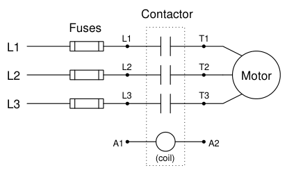
Energizing terminals A1 and A2 magnetizes the electromagnet coil, causing all three switch contacts to simultaneously close, sending three-phase AC power to the motor. De-energizing the coil causes it to de-magnetize, releasing the armature and enabling a return spring inside the contactor to snap all three contacts to the open (off) position. A contactor rated at 75 horsepower (at 480 volt AC 3-phase power) is shown here, both assembled and with the top cover removed to reveal the three sets of high-current electrical switch contacts:
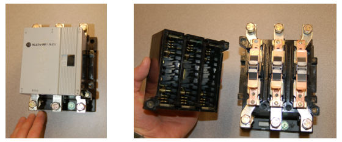
Each phase switch contact is actually a series pair of contacts that make and break simultaneously with the actuation of a ferrous armature attracted by an electromagnet coil in the base of the contactor assembly. The operation of the three contact sets may be seen in this pair of photographs, the left-hand image showing the contacts in their normal (open) state, and the right-hand image showing the contacts closed (the armature “pulled in”) by the force of my finger:
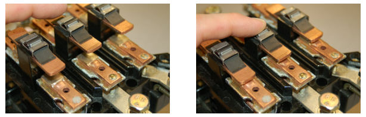
Of course, it would be very dangerous to touch or manually actuate the contacts of a motor starting relay with the cover removed as shown. Not only would there be an electric shock hazard from touching any one of the bare copper contacts with your finger, but the arcing produced by closing and opening such contacts would pose arc flash and arc blast hazards. This is why all modern motor contactors are equipped with arc shield covers. The actual switch contact pads are not made of pure copper, but rather silver (or a silver alloy) designed to survive the repeated arcing and blasting action of large AC currents being initiated and interrupted. Below the main power connection terminals (L1-L3, T1-T3) on this contactor hide two small screw terminals (commonly denoted A1 and A2) providing connection points to the electromagnet coil actuating the contactor:
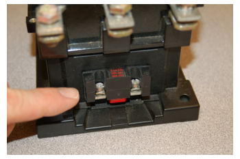
Like most three-phase contactors, this one’s coil is rated for 120 volts AC. Although the electric motor may operate on three-phase, 480 volt AC power, the contactor coil and the rest of the control circuitry operates on a lower voltage for reasons of safety. Like all electromechanical relays, motor contactors use a low-power signal to control higher-power electric current to the load. This
“amplifying” action enables relatively small control switches, PLCs, and relay circuits to start and stop relatively large (high-current) electric motors.
An essential component of any high-power motor control circuit is some device to detect a condition of excessive overload and interrupt power to the motor before thermal damage occurs. A very simple and common overload protective device is known as an overload heater, consisting of resistive elements connected in series with the three lines of a 3-phase AC motor, designed to heat and to cool at rates modeling the thermal characteristics of the motor itself. Fuses and circuit breakers also protect against overcurrent, but for different reasons and for different parts of the motor circuit. Both fuses and circuit breakers tend to be fast-acting devices, intended to interrupt overcurrent resulting from an electrical fault such as a phase-to-ground short circuit. They are sized to protect the wiring delivering power to a load, not (necessarily) the load itself. Thermal overload heaters, by contrast, are specifically designed to protect an electric motor from damage resulting from mild overcurrent conditions, such as what might be experienced if the motor becomes mechanically overloaded. The sizing of overload heaters is unrelated to wire ampacity, and therefore unrelated to the ratings of the fuses or circuit breakers delivering line power to the motor. A schematic diagram of a three-phase overload connected to a three-phase contactor and threephase motor is shown here:
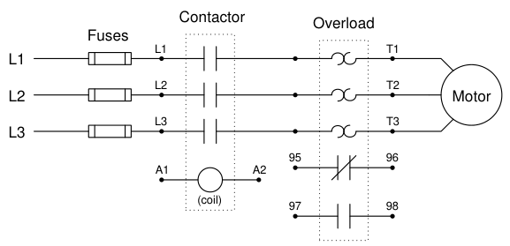
Both contacts inside the overload assembly will remain in their resting (“normal”) states so long as the heater elements (the back-to-back “hook” symbols seen in the above diagram) remain cool. If one or more of the resistive heaters becomes too warm, however, the contacts will actuate and change state. The normally-closed overload contact (terminals 95 and 96) is typically wired in series with the contactor coil (terminals A1 and A2), so that a detected overload condition forces the contactor to de-energize and interrupt power to the motor.
The following photograph shows a three-phase contactor relay joined together with a set of three “overload heaters” through which all of the motor’s current flows. The overload heaters appear as three brass-colored metal strips near a red push-bar labeled “Reset”. The entire assembly – contactor plus overload heaters – is referred to as a starter:
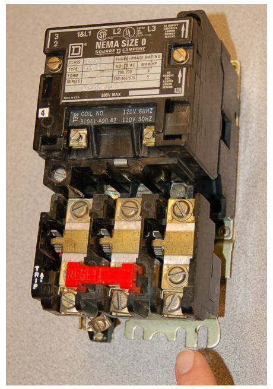
Removing one of the heater elements reveals its mechanical nature: a small toothed wheel on one side engages with a lever when it is bolted into place in the overload assembly. That lever connects to a spring-loaded mechanism charged by the manual actuation of the red “Reset” push-bar, which in turn actuates a small set of electrical switch contacts:
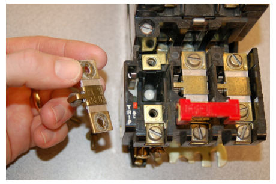
The purpose of the overload heater is to heat up as the motor draws excessive current. The small toothed wheel is held in place by a rod immersed in a solidified mass of solder, encased in a brass cylinder underneath the heater strip. The next photograph shows the underside of the heater element, with the toothed wheel and brass cylinder plainly visible:
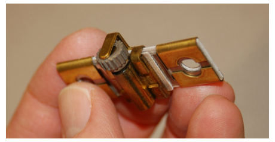
If the heater element becomes too hot (due to excessive motor current), the solder inside the brass cylinder will melt, allowing the toothed wheel to spin. This will release spring tension in the overload mechanism, allowing the small electrical switch to spring to an open state. This “overload contact” then interrupts current to the contactor’s electromagnet coil, causing the contactor to de-energize and the motor to stop.
Manually pressing the “Reset” push-bar will re-set the spring mechanism and re-close the overload contact, allowing the contactor to energize once more, but only once the overload heater element has cooled down enough for the solder inside the brass cylinder to re-solidify. Thus, this simple mechanism prevents the overloaded motor from being immediately re-started after a thermal overload “trip” event, giving it time to cool down as well. A typical “trip curve” for a thermal overload unit is shown here, with time plotted against the severity of the overcurrent level:
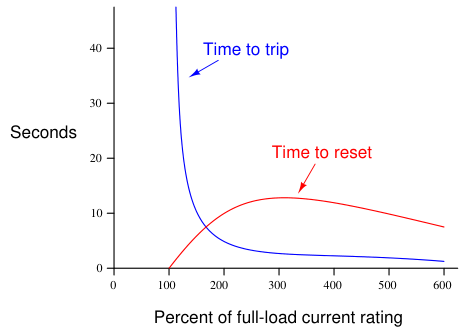
In contrast to a circuit breaker or fuse – which is sized to protect the power wiring from overcurrent heating – the overload heater elements are sized specifically to protect the motor. As such, they act as thermal models of the motor itself, heating to the “trip” point just as fast as the motor itself will heat to the point of maximum rated temperature, and taking just as long to cool to a safe temperature as the motor will. Another difference between overload heaters and breakers/fuses is that the heaters are not designed to directly interrupt current by opening25, as fuses or breakers do. Rather, each overload heater serves the simple purpose of warming proportionately to the magnitude and time duration of motor overcurrent, causing a different electrical contact to open, which in turn triggers the contactor to open and interrupt motor current. Of course, overload heaters only work to protect the motor from thermal overload if they experience similar ambient temperature conditions. If the motor is situated in a very hot area of the industrial process unit, whereas the overload elements are located in a climate-controlled “motor control center” (MCC) room, they may fail to protect the motor as designed. Conversely, if the overload heaters are located in a hot room while the motor is located in a freezing-cold environment (e.g. the MCC room lacks air conditioning while the motor is located in a freezer), they may “trip” the motor prematurely.
25This is not to say overload heaters cannot fail open, because they can and will under extraordinary circumstances. However, opening like a fuse is not the design function of an overload heater.
An interesting “trick” to keep in mind for motor control circuit diagnosis is that overload heaters are nothing more than low-value resistors. As such, they will drop small amounts of voltage (usually quite a bit less than 1 volt AC) under full load current. This voltage drop may be used as a simple, qualitative measure of motor phase current. By measuring the voltage dropped across each overload heater (with the motor running), one may ascertain whether or not all phases are carrying equal currents. Of course, overload heaters are not precise enough in their resistance to serve as true current-measuring “shunts,” but they are more than adequate as qualitative indicators of relative phase current, to aid you in determining (for instance) if the motor suffers from an open or highresistance phase winding:
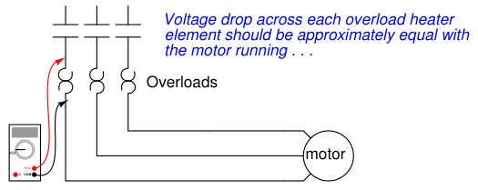
As useful as thermal overload “heaters” are for motor protection, there are more effective technologies available. An alternative way to detect overloading conditions is to monitor the temperature of the stator windings directly, using thermocouples or (more commonly) RTDs, which report winding temperatures to an electronic “trip” unit with the same control responsibilities as an overload heater assembly. This sophisticated approach is used on large (thousands of horsepower) electric motors, and/or in critical process applications where motor reliability is paramount. Machine vibration equipment used to monitor and protect against excessive vibration in rotary machines is often equipped with such temperature-sensing “trip” modules just for this purpose. Not only can motor winding temperatures be monitored, but also bearing temperatures and other temperaturesensitive machine components so that the protective function extends beyond the health of the electric motor.
Devices specifically constructed to monitor the condition of electrical power components such as motors, generators, transformers, or distribution lines, and take action to protect those components in the event their parameters fall outside safe limits, are generally known as protective relays26. A protective relay is designed to monitor physical variables such as line currents and winding temperatures relevant to a large electrical component, then automatically initiate a “trip” action to shut offpower to that component by sending a signal to the nearest circuit breaker or other automatic disconnect device27. Originally, protective relays were electromechanical in nature, using coils, magnets, springs, rotating disks, and other components to detect and act upon out-of-spec electrical measurements. Modern protective relays – for electric motors or for other electric power components such as generators, power lines, and transformers – use microprocessors instead of electromagnetic mechanisms to perform the same basic functions. With microprocessor technology comes vast increases in responsiveness and precision of timing, as well as digital networking capability to share system data among other components and to human operators.
26For a more complete coverage of protective relays, refer to section 25.7 beginning on page 1989. 27One way to help clarify the function of a protective relay is to envision circuit protection without one. Household and low-current industrial circuit breakers are constructed to have their own internal current-sensing elements (either thermal or magnetic) to force the circuit breaker open automatically when current exceeds a pre-set limit. With protective relays, the circuit breaker instead has a “trip coil” which will cause the breaker to trip when energized. The breaker then relies entirely on the (external) protective relay to tell it when to trip. By relegating the function of event detection to a sophisticated, external relay, the circuit breaker may act much “smarter” in protecting against a wider variety of faults and abnormal conditions than if it relied entirely on its own internal overcurrent-sensing mechanism.
A diagram showing how a modern (digital) protective relay would monitor various parameters on a medium-voltage (4160 volts AC, three-phase) industrial electric motor is shown here:
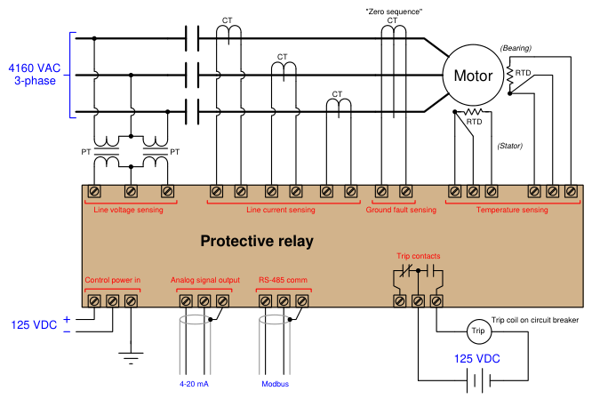
In this example, line voltage (4160 volts AC) and line current are both too great to be directly connected to the protective relay, and so the relay senses line voltage and line current via potential transformers (PTs) and current transformers (CTs), respectively. A potential transformer28 is a precision device providing a known accurate step-down ratio, usually down to 120 volts or 240 volts AC full-scale, for the protective relay to directly sense. Likewise, a current transformer is a precision device providing a known and accurate step-down ratio for current (actually a stepup from the perspective of voltage), usually down to 1 amp or 5 amps AC full-scale, for the protective relay to directly sense. Both transformers provide galvanic isolation (a complete lack of electrical conductivity) between the medium-voltage motor power conductors and the protective relay electronics while still permitting accurate sensing of line voltage and line current. The zero sequence CT is a special current transformer encircling all three motor phase conductors, providing indication of a ground fault within the motor. The fact that this CT measures the instantaneous algebraic sum of currents in and out of the motor means that in ordinary operation it will output absolutely zero signal, since Kirchhoff’s Current Law states that the algebraic sum of currents into and out of a node (the motor here is considered a node) must be zero. If, however,
28Potential transformers are also known as voltage transformers, abbreviated VT. a ground fault develops within the motor where some AC current “leaks” from a stator winding to earth ground to return to the 4160 VAC power source’s neutral connection, that imbalance of phase currents will be sensed by the zero sequence CT, since that ground fault current represents a fourth path for current not accounted for by the three power conductors passing through to the motor. This next photograph shows the front panel display of a General Electric (“Multilin”) model 369 protective relay for an electric motor:
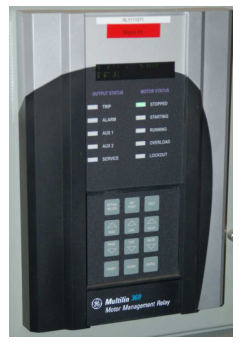
A simple three-phase, 480 volt AC motor-control circuit is shown here, both in pictorial and schematic form. This entire assembly consisting of contactor, overload block, control power transformer, power fuses (or alternatively, a circuit breaker) and associated components is informally referred to as a bucket:
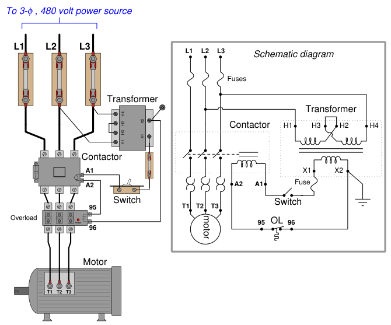
Note how a control power transformer steps down the 480 volt AC to provide 120 volt AC power for the contactor coil to operate on. Furthermore, note how the overload (“OL”) contact is wired in series with the contactor coil so that a thermal overload event forces the contactor to de-energize and thus interrupt power to the motor even if the control switch is still in the “on” position. The overload heaters appear in the schematic diagram as pairs of back-to-back “hook” shapes, connected in series with the three “T” lines of the motor. Remember that these “OL” heater elements do not directly interrupt power to the motor in the event of an overload, but rather signal the “OL” contact to open up and de-energize the contactor.
In an automatic control system, the toggle switch would be replaced by another relay contact (that relay controlled by the status of a process), a process switch, or perhaps the discrete output channel of a programmable logic controller (PLC).
It should be noted that a toggling-style of switch is necessary in order for the motor to continue to run after a human operator actuates the switch. The motor runs when the switch is in the closed state, and stops when the switch opens. An alternative to this design is to build a latching circuit allowing the use of momentary contact switches (one to start, and one to stop). A simple latching motor control circuit is shown here:
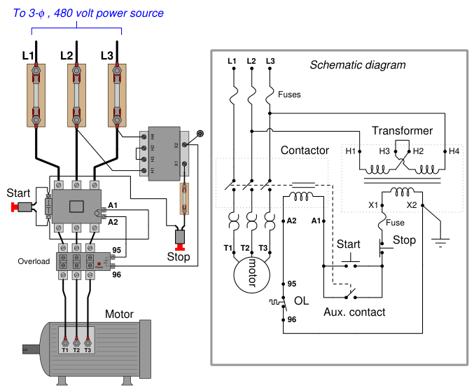
In this circuit, an auxiliary contact actuated by the motor contactor is wired in parallel with the “Start” pushbutton switch, so that the motor contactor continues to receive power after the operator releases the switch. This parallel contact – sometimes called a seal-in contact – latches the motor in an “on” state after a momentary closure of the “Start” pushbutton switch.
A normally-closed “Stop” switch provides a means to “un-latch” the motor circuit. Pressing this pushbutton switch opens the control circuit, forcing current to halt through the coil of the contactor, which then opens the three motor power contacts as well as the auxiliary contact used to maintain the contactor’s energized state. A simple ladder diagram showing the interconnections of all components in this motor control circuit makes this system easier to understand:
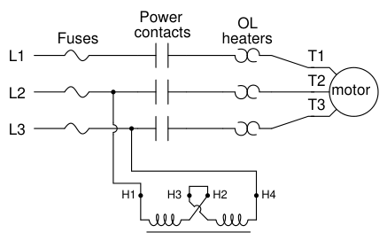
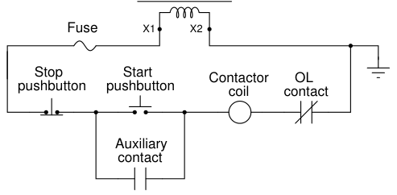
Most on/offmotor control circuits in the United States are some variation on this wiring theme, if not identical to it. Once again, this system could be automated by replacing the “Start” and “Stop” pushbutton switches with process switches (e.g. pressure switches for an air compressor control system) to make a system that starts and stops automatically. A programmable logic controller (PLC) may also be used to provide the latching function rather than an auxiliary contact on the contactor. Once a PLC is included in the motor control circuit, a great many automatic control features may be added to enhance the system’s capabilities. Examples include timing functions, motor cycle count functions, and even remote start/stop capability via a digital network connecting to operator interface displays or other computers.
In applications where reversing motor control is desired, a pair of contactors may be wired together as shown here:
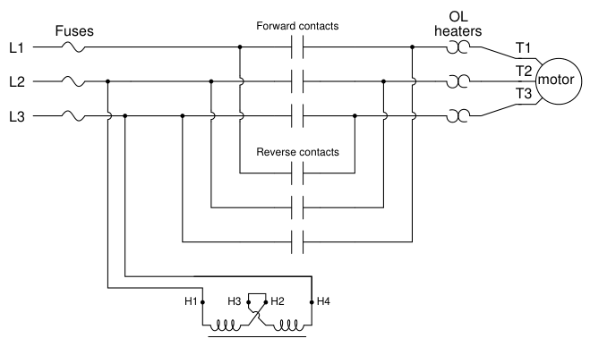
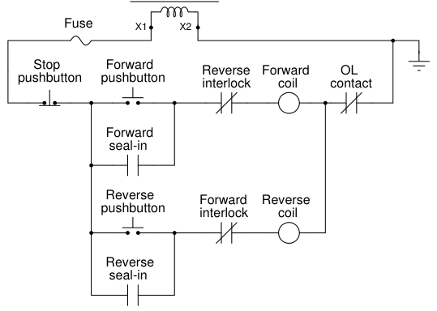
Note how motor reversal is accomplished by swapping phases L1 and L3: in the forward direction, power line conductor L1 connects to motor terminal T1, L2 connects to T2, and L3 connects to T3. In the reverse direction L2 still connects to T2, but L1 now connects to T3 and L3 now connects to T1. Recall the principle that swapping any two phases in a three-phase power system reverses the phase rotation, which in this case make the electric motor spin the other direction. With two contactors, the control circuit now contains two coils to actuate those contactors: one marked “forward” and the other marked “reverse”. Separate “forward” and “reverse” pushbutton switches send power to those coils, and separate seal-in auxiliary contacts connected in parallel with their respective pushbuttons latch each one. An important feature of this reversing starter circuit is the inclusion of interlocking contacts in each rung of the circuit. In the forward-control circuit, a normally-closed auxiliary contact actuated by the “reverse” contactor is wired in series, and vice-versa in the reverse-control circuit. The purpose of an “interlock” is to prevent incompatible events from happening, in this case preventing the actuation of the “reverse” contactor when the “forward” contactor is already actuated, and vice-versa. If both contactors were to be simultaneously actuated, it would result in a direct phaseto-phase fault (short-circuit) between L1 and L3! Some reversing motor starters provide a feature called mechanical interlocking, where the motion of the armature in each contactor is restrained in such a way that both cannot actuate simultaneously. This usually takes the form of a “rocking beam” lever preventing one contactor armature from being pulled in while the other contactor’s armature is pulled in, similar to a “see-saw” playground toy where only one end can be down at any given time. It is not uncommon for both electrical and mechanical interlocking to be used in the same reversing starter, as a measure of extra protection.
A modern trend in motor control is the use of digital networks to both command the contactor as well as monitor the motor’s operating status remotely. This next photograph29 shows a digitally monitored and controlled “bucket,” using DeviceNet as the control network:
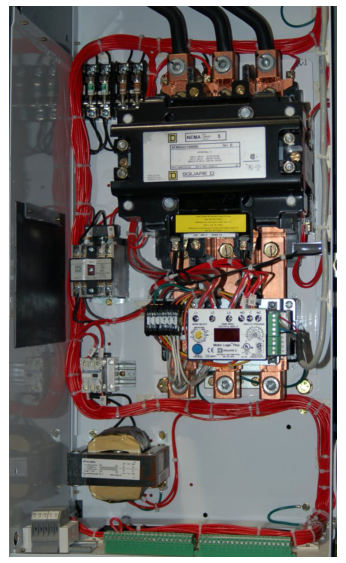
Using a digital network standard such as Ethernet, DeviceNet, Modbus, Profibus, or any number of others to monitor and control a motor brings a host of benefits for maintenance and operations. Control wiring is vastly simplified with digital networks, as a single network cable is able to address multiple motor buckets. The “smart” network interface module installed in the bucket may be designed to monitor such parameters as line voltage, line current, phase imbalance, and power factor to report these values to the host control system via the network.
29This bucket was still under construction at the time the photograph was taken. As such, none of the motor leads have been connected, which is why there are no power conductors exiting the bottom of the bucket. Instead, all you see are three terminals ready to accept heavy-gauge motor leads.
It is common for the network interface module inside the bucket to have its own digital display for local indication of these parameters as well. A close-up photograph of a Square-D “Motor Logic Plus” unit shows some of its locally-accessible features:
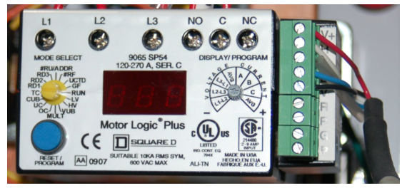
The PLC connected to the network is able to access all these values as well, reporting them to operations and/or maintenance personnel as desired. Instead of individual wires running between the PLC and the motor starter to command each motor to run and stop, the PLC simply transmits “start” and “stop” commands over the network to individually addressed digital starter modules. The network wiring may simply be paralleled (“daisy-chained”) between units, such that several buckets reside on the same physical network, each one programmed with a unique address. A PLC connected to this same network is thus able to access and control all parameters for all motors on that network.